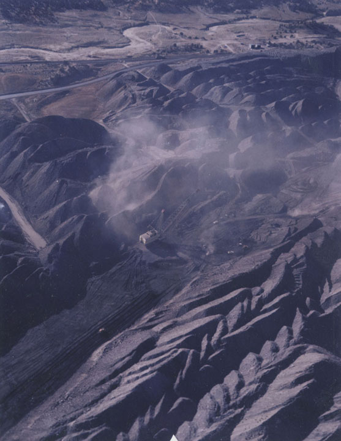

Dan Budnik
, United States b. 1933.
Black Mesa Coal Mine, “Kayenta” Pit, Hopi/Navajo, AZ
, ca. 1980. Polaroid print. Special purchase from a grant from the Polaroid Corporation 81.117.27. © Dan Budnik